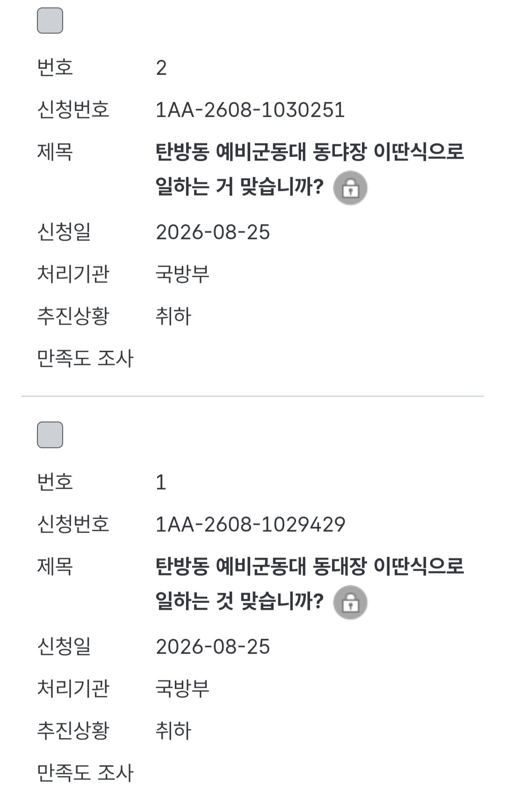
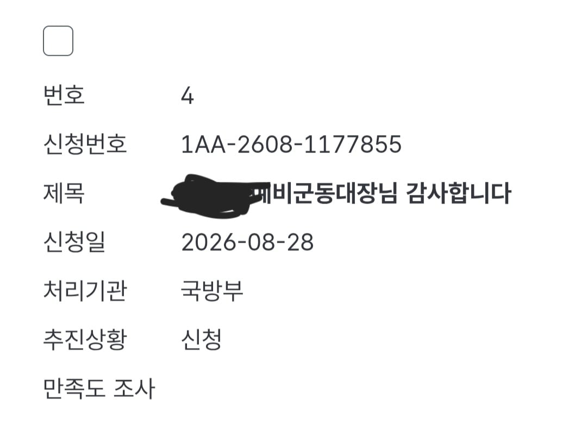

안녕하세요 8월 25일 예비군 동대장 관련 글을 썼던 사람입니다.
저는 8월 25일 점심 관련하여 동대장님에게 욕설을 하는 글과 함께 민원과 제보를 하겠다는 글을 썼습니다.
그리하여 동대장분들과 동대분들에게 심려를 끼쳐드림과 동시에 개드립에서 이런 글을 씀으로써 많은 분들에게 심적 불편함을 끼쳐드렸습니다.
밥의 경우 공깃밥 사진은 바로 찍은 사진이오나 이는 식당에 얘기하거나 혹은 동대장님께 얘기하여 해결했어야 하는 문제임을 이제야 인식하는 제가 부끄럽습니다.
그리고 이에 관련하여 썼던 글 중 동대장님께 했던 공격스런 언행은 저의 억측이었으며 그로인해 동대장님께서 이전에 말씀드린 것 처럼 마음에 상처를 입으셨을 것이라 생각됩니다.
동시에 글 삭제 및 계정 탈퇴의 경우에는 깊게 생각을 해본 결과 먼저 개드립에 그 글이 있거나 계정이 있어보아야 이후 저의 생각과 결정에 안좋은 영향을 끼칠 것 같아 삭제하게 되었습니다.예시) 나는 틀리지 않았고 시간이 지나면 알아서 잊혀질 일이다 이런식의 생각이 들까봐서 입니다." 동시에 저에게도 동대장님에게도 일을 더욱 크게 키우고 싶지 않아 먼저 삭제와 탈퇴를 진행하였습니다.
댓글 하나하나 보며 큰 반성을 하였고 많이 배웠습니다.
진상은 진상인 줄 모른다는 얘기를 식당하며 참 많이도 했었는데 그게 제 얘기였나 봅니다.
이에 큰 책임을 느끼고 있고 그래서 이 글을 작성하고 있습니다.
가장 부끄러운 것은 여러분들이 얘기해주시기 전까진 제가 맞다고 생각하고 있었다는 겁니다.
한 가정의 가장으로써 커뮤니티의 이용자로서 참 많은 심려를 끼쳐드렸고 불편함을 끼쳐드린 점 다시한번 사과드리며 두번 세번 생각하여 행동하는 사람이 되도록 노력하겠습니다.
또한 두 아이의 아빠로서 이 아비가 잘못한 일로 배운 이 많은 것들을 알려주어 주변에 폐끼치지 않는 아이들이 되도록 노력하겠습니다.
1. 민원처리는 어떻게 되었나?
8월 26일 오전 약 11시30분쯤 모두 취소신청을 하였고 민원은 취소가 되었습니다.
2. 제보는 어떻게 되었나?
각각 8월 26일 오전 11시 15분쯤에 jtbc 하나를 취소하였고 지금 사과문을 작성하며 kbs측 제보가 취소신청을 하지 않았다는 것이 확인되어 취소를 한
상황입니다.(글 작성기준 오후 8월26일 11시 17분)
3. 동대장님께 사과는 드렸는가?
금일 오전 10시5분쯤 방문하여 사과드리고 오는 길 입니다.
26일에 사과드리러 가기엔 시간이 너무 늦어 이미 퇴근하신 뒤었기에 오늘 오전에 일 안하고 먼저 사과드리러 갔고 다행이도 받아주셨습니다.
사진은 사과하는 입장에서 찍어달라고 하기엔 염치없는 행동이라 사과만 드리고 사과문이 올라갈 예정이라 말씀드린 후 최대한 동대장님께 피해가 가지 않도록 먼저 피해 없도록 부탁하는 민원부터 작성하였습니다.
4. 글삭, 계삭튀는 왜 했는가?
이전에 서술했지만 자세히 쓰자면
a) 아무 방해없이 깊게 생각해보기 위해 객관적으로 본인을 돌아볼 시간이 필요하다 생각
b) 제가 잘못한 일이지만 댓글로 욕을 먹다보니 간간히 고개를 드는 반발심. 그로인해 또다른 누를 범할까 싶어 아예 원천차단
이 두가지 이유를 크게 꼽을 수 있겠습니다.
무엇보다 동대장님이 제일 큰 피해자신데 동대장님에게 직접 사과 드리기 전에 사과문 쓰는 것도 좀 아닌거 같아서...
5. 사과문이 왜 이틀씩이나 걸렸는가?
먼저 제가 당시 느꼈던 분노를 삭이고 다시 천천히 당시 제가 있던 예비군에서 있던일을 복기하였고, 결정하는 과정에서 시간이 꽤나 지체된 상황이었습니다.
생각의 정리를 끝내고 동대장님께 사과를 하고 사과문을 작성하자고 생각한 것이 약 오후 6시 50분
그리고 개드립에 재가입을 한 것이 26일 약 오후 10시 30분
개드립에 활동할 수 있는 시간이 하루정도 걸린다 하여 지금 사과문을 올립니다.
그리고 ai를 통해 대충 뽑은 사과문이면 아예 올리고싶지 않기도 했습니다.
6. 대체 그런민원은 왜 넣은건가?
저도 그때 상황을 되짚어보니 잘 이해가 안가네요. 이렇게까지 분노하고 화내고 일을 키울 일인가 싶었습니다.
그나마 생각해보기로는 아이의 상태 및 밤샘으로 인한 스트레스와 피로감으로 인해 매우 크게 예민하게 받아들여 이런 실태를 범한것이 아닌가 생각 중 입니다.
30시간정도 무수면 상태였어서요.
(애엄마도 전업주부로써 애들을 아주 잘 보지만 3일연속 밤샘했기에 대신 밤을새고 일했었습니다.)
7. 그럼 나중에 비슷한 상황에선 또 이러겠네?
일단 지금은 아니라고 말씀 드리고 싶습니다.
많이 혼났고 많이 배웠는데 여기서 또 같은 실태를 범할 수는 없으니까요
근데 사람이란게 늘 그렇듯 약속과 계약만으로 돌아가지 않다보니 100% 안 할 것이다 라고는 말씀 드리진 못하겠으나
백번 천번 숙고하고 주변에 얘기해보고 인터넷에도 물어보며 이런일이 일어나지 않도록 필사의 노력을 할 생각입니다.
부디 그런일이 일어나지 않도록 노력과 동시에 간절히 바랄 뿐 입니다.
마치며
놀랍게도 제 가족욕을 하시는 분들이 없더라구요
정말 이 점 정말 감사하게 생각드립니다.
여러분의 화와 분노는 지금 생각해도 합당하다 생각합니다.
앞으로는 이런일이 생기지 않도록 최선의 노력을 하며 지내도록 하겠습니다.
다시한번 논란을 키워 사과드리며 글 마치도록 하겠습니다.
개인적으로 아쉬운 점은 글 쓴 당사자분에게 직접 감사인사 못 드린 점, 그리고 이름은 개인정보라 확인 못하여 칭찬민원 못쓰는 점 이네요.
선물로 드린 과일은 집앞에서 평소 자주 사먹던 곳에서 산건데 입맛에 맞으셨을지 모르겠습니다.


그리고 저한테 그때 욕먹으셨던 분도 미안합니다.
박위상태에서 긁혔었다니
박위가 정말 큰일 했다